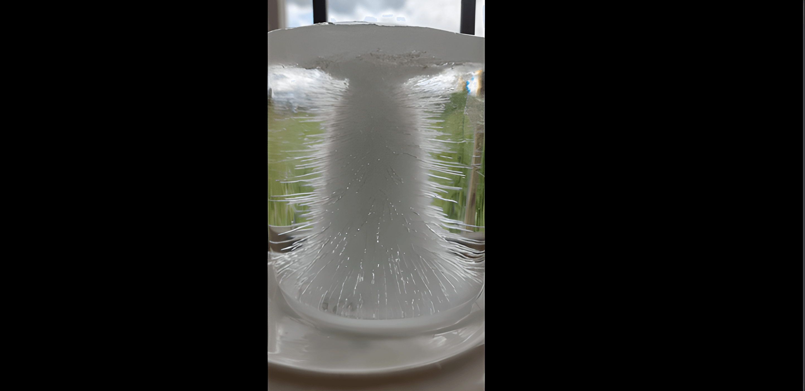
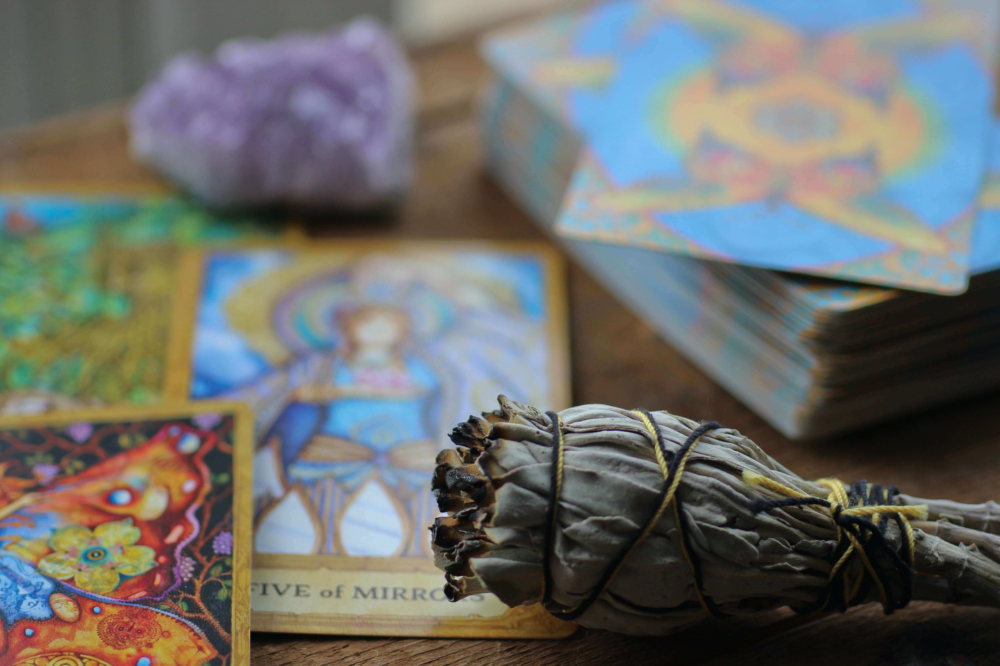

Nuestro poder y sabiduría al servicio del mundo. Buscando tu tranquilidad y felicidad en la salud, en el amor, en la fortuna y trayendote suerte y abundancia.
Buscamos tu felicidad en el amor, en la fortuna y en la salud.
ContactoCon profundo conocimiento y conexión con la energía vital, este monje utiliza técnicas ancestrales para promover el equilibrio y la sanación en cuerpo y mente. Su práctica espiritual inspira armonía y bienestar en busca de la plenitud interior.
El parapsicologo trata todo lo relacionado con percepción extrasensorial (telepatía, clarividencia, precognicion y presentimiento), la interacción mente-materia y los fenómenos que sugieren la supervivencia después de la muerte corporal, incluyendo las experiencias cercanas a la muerte, las apariciones y la reencarnación.
Como guía espiritual, a través de la intersección de nuestro Dios, y la investidura de su poder, lleva a su protegido con protección paternal, lo aconseja, y lo conforta en los momentos de aflicción.
Como monje, en su espacio de soledad y discernimiento, realiza oración de protección, de sanidad y de fortaleza para sus discípulos.
Como maestro de ciencias ocultas y ancestrales, promueve la realidad hacia el cumplimiento de la voluntad del necesitado, utilizando recursos extrasensoriales, físicos y psicológicos, que permiten realizar procedimientos para lograr la tranquilidad y felicidad del consultante o paciente.
Click
Terapia bioenergética especial para potencializar la capacidad sexual, y atraer el amor.
Lectura interactiva de la simetría corporal
Imposición imperial del talismán de fortuna y abundancia
Terapia bioenergetica interactiva de sanación
Ritual interactivo de fortuna, riqueza y abundancia
Trabajo de sanación de hechizos de tierras, fibras, aguas, químicos, rezos, magias y maleficios

Terapias bioenergéticas para la recuperación, permanencia y aumento, de tus capacidades físicas y emocionales.
Consultas de parapsicología del consciente y subconsciente, y salud mental.
Rituales en altar sagrado para recuperar tu pareja, para la sanación de enfermedades, para recuperar la suerte y llamar fortuna, para conseguir trabajo y mejorar en el estudio.
Lectura de Tarot interactivo
Lectura interactiva de la mano
Consultas en ciencias ocultas y ancestrales.
Imposición amarre imperial del nudo Celta del amor eterno
Trabajos de magia de la vida y la muerte.
Trabajo de liberación de ataduras, cadenas y amarres
Consultas en ciencias ocultas y ancestrales.
Lectura interactiva de las cartas
Amarre imperial de amor eterno
Mi experiencia con la terapia bioenergética ha sido transformadora. Después de lidiar con niveles altos de estrés y ansiedad durante años, decidí probar algo nuevo. Gracias al Maestro Jesús Juan, he logrado liberar tensiones acumuladas y recuperar un equilibrio que había perdido. Ahora siento una renovada energía y una paz interior que no había experimentado en mucho tiempo. ¡La terapia bioenergética ha sido una bendición en mi vida!
testimonio completo
Cuando me encontraba en una situación financiera difícil y no sabía cómo afrontar mis deudas y gastos, decidí explorar alternativas. Fue entonces cuando conocí al Maestro. Durante las sesiones, aprendí a liberar bloqueos emocionales y energéticos que estaban afectando mi relación con el dinero. Sin embargo, lo que ocurrió después superó todas mis expectativas: poco después de iniciar las terapias, recibí un ingreso inesperado que me permitió solucionar mis problemas financieros y empezar de nuevo. El Maestro Jesús Juan me ayudo a encontrar nuevas oportunidades y posibilidades para ser próspero.
testimonio completo
Cuando mi matrimonio estaba al borde del colapso. Me sentia perdida. Fue entonces cuando decidí acudir al Maestro Jesús Juan recomendado por un gran amigo. A través de las sesiones, no solo descubrí cómo trabajar en mí misma, sino también cómo mejorar la relación con mi pareja. Aprendí a liberar patrones de comportamiento negativos y a comunicarme de manera más abierta y sincera. Gracias al Maestro y sus conocimientos, hemos sanado heridas pasadas y reconstruido nuestra conexión. Mi pareja y yo estamos ahora más fuertes y unidos que nunca. Esta terapia no solo salvó nuestra relación, sino que también nos ayudó a crecer juntos en amor y armonía.
testimonio completo
En la búsqueda del equilibrio y la felicidad, la terapia bioenergética, la parapsicología y los rituales ancestrales se presentan como herramientas únicas. La terapia bioenergética libera tensiones emocionales y revitaliza la energía vital. La parapsicología amplía nuestra percepción y claridad mental. Los rituales ancestrales conectan con lo espiritual y la herencia cultural. Juntos, estos enfoques nos guían hacia un camino integral de autodescubrimiento, liberación y conexión con lo esencial, en busca de una vida equilibrada y plena.
Contacto